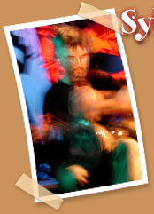

|  | |||
|
Cet ingénieux et polyvaillant Francilien de souche étudie les percussions classiques, africaines et moyen-orientales. Pianiste de jazz autodidacte, bricoleur-patenteur épatant, ex-professeur de technologie: un cas ! |
|||
| •Tournées
avec le Quartet Azar, Cyrille
Sergé Septet, Thomas Pitiot… • Compositions éclectriques. • Invente et fabrique une batterie sans fûts avec cymbale rectangulaire et accessoires sonores, ainsi qu’un vibraphone pouvant produire des quarts-de-tons. |
|||
|
|
|||